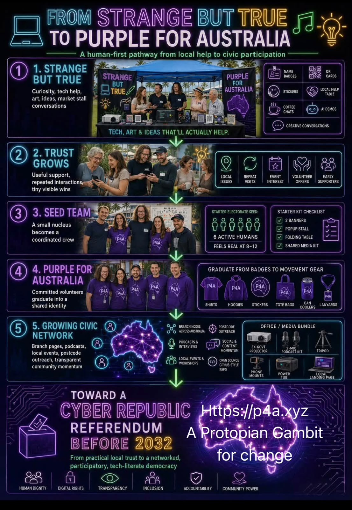
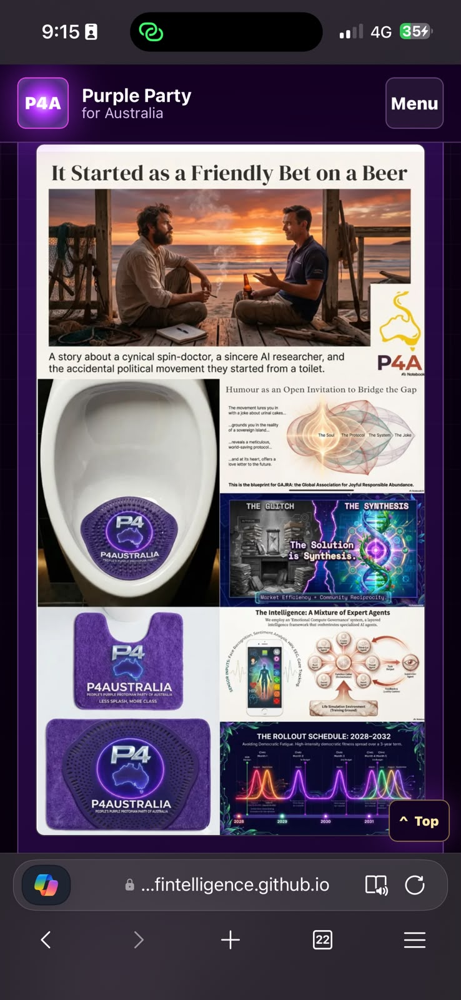
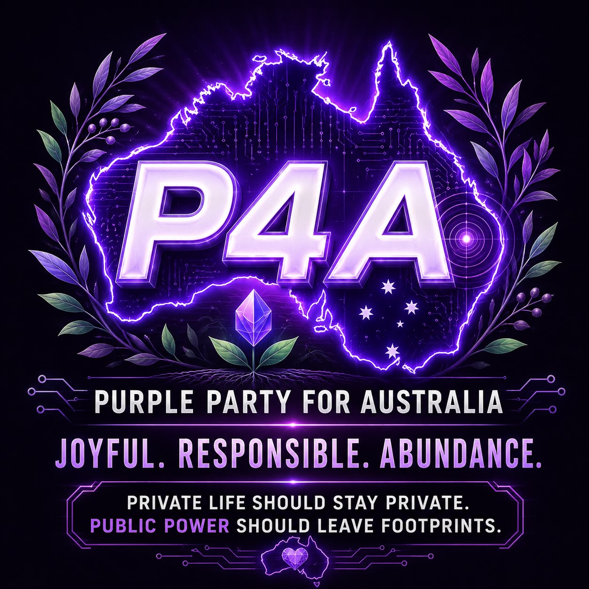

One serious node per 10,000 Australians
I’ve proposed one public-interest compute node per 10,000 Australians, with Dunwich as a possible starting point.

Chapter 08 of 13 | A fair go
I want people to have more say in decisions that affect their lives. That has led me into law, public records, community tools and some fairly big questions about what Australia could do differently.
I want more ways for people to participate in public decisions than voting every few years. My work connects everyday complaints, local knowledge, law, public records and longer-term choices.
Sometimes I work through those questions in a website or a model. Sometimes I write a document for a parliamentary submission. Humour is part of it too, including the purple toilet mat and a friendly bet that found their way into the music.
I’m exploring ways to connect useful work, learning and public participation.
I’ve proposed one public-interest compute node per 10,000 Australians, with Dunwich as a possible starting point.
I developed the C-Hour and the Incomplete Ledger to explore how care, time, unresolved needs and civic work could be made more visible.
I’m proposing a co-operative approach to shared facilities, practical work and training through Ready S..E.T. Co-op.
A friendly bet and a purple toilet mat are part of this story too.
I built P4A as a public civic workbench, connecting everyday gripes with projects, ledgers, law, states and referendum rehearsal.
Explore P4A civic workbenchI’ve proposed a cyber republic referendum before 2032 and built tools for exploring stronger digital participation.
In my AUKUS-related writing, I explore opportunity costs and what investment in civic, technical and scientific capability could offer Australia.
I’m exploring the relationship between human self-reflection and AI alignment: how our values, contradictions and institutions shape the intelligence we develop.



Let this chapter sound like
Album 4: A Protopian Gambit
It keeps the toilet-mat origin, friendly humour and serious democratic curiosity in the same story.
Play the lyric video here, or open it full size.{kind=link}
{kind=link}
{kind=link}